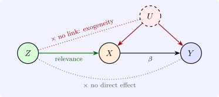

13.2 The instrumental variables estimator
Definition 13.2.1. In the model \(Y = X\beta + U\) with \(X\) of order \(n \times k\), an \(n \times \ell \) matrix \(Z\) of instruments, with \(\ell \geq k\), satisfies
- (i)
- exogeneity: \(\plim \frac 1nZ'U = 0\);
- (ii)
- relevance: \(\plim \frac 1nZ'X = Q_{ZX}\) has rank \(k\);
together with \(\plim \frac 1nZ'Z = Q_{ZZ}\) positive definite. The exogenous columns of \(X\), including the constant, serve as their own instruments, so \(Z\) contains them. The equation is exactly identified if \(\ell = k\) and overidentified if \(\ell > k\).

Condition (ii) for \(\ell = k\) says that \(Z'X\) is non-singular; it requires at least as many excluded instruments as endogenous regressors (the order condition), and that they be correlated with the endogenous regressors in a non-degenerate way (the rank condition).
Theorem 13.2.2. If \(\ell = k\), the instrumental variables (IV) estimator \[ b_{\text {IV}} = (Z'X)^{-1}Z'Y \] is consistent for \(\beta \). If moreover the rows \((z_i', u_i)\) are independent with \(E(u_i^2 \mid z_i) = \sigma ^2\), then \[ \sqrt n(b_{\text {IV}} - \beta ) \xrightarrow {d} N\bigl (0,\ \sigma ^2Q_{ZX}^{-1}Q_{ZZ}Q_{XZ}^{-1}\bigr ), \qquad Q_{XZ} = Q_{ZX}' , \] and \(\sigma ^2\) is estimated consistently by \(s^2 = \hat u'\hat u/(n - k)\) with \(\hat u = Y - Xb_{\text {IV}}\).
Proof. \(b_{\text {IV}} = (Z'X)^{-1}Z'(X\beta + U) = \beta + \bigl (\frac 1nZ'X\bigr )^{-1}\frac 1nZ'U\). The first factor converges to \(Q_{ZX}^{-1}\) and the second to zero, so \(b_{\text {IV}} \xrightarrow {p} \beta \) by Slutsky’s theorem. For the distribution, \(\frac {1}{\sqrt n}Z'U = \frac {1}{\sqrt n}\sum z_iu_i\) is a scaled sum of independent vectors with mean zero and variance \(E(u_i^2z_iz_i') = \sigma ^2E(z_iz_i')\), so it converges to \(N(0, \sigma ^2Q_{ZZ})\) by the central limit theorem. Multiplying by \(Q_{ZX}^{-1}\) gives the stated variance. For \(s^2\), \(\hat u = U - X(b_{\text {IV}} - \beta )\), and \(\frac 1n\hat u'\hat u = \frac 1nU'U - 2\frac 1nU'X(b_{\text {IV}} - \beta ) + (b_{\text {IV}} - \beta )'\frac 1nX'X(b_{\text {IV}} - \beta ) \xrightarrow {p} \sigma ^2\), since \(b_{\text {IV}} - \beta \xrightarrow {p} 0\). □
In the two-variable case with a single instrument, in deviations, \[ b_{\text {IV}} = \frac {\sum z_iy_i}{\sum z_ix_i}, \qquad \frac {\text {asymptotic variance of } b_{\text {IV}}}{\text {asymptotic variance of } b} = \frac {1}{r_{xz}^2}, \] where \(r_{xz}\) is the correlation between \(x\) and \(z\), when both estimators are consistent. The price of consistency is precision, and it is high when the instrument is only weakly correlated with the regressor: with \(r_{xz} = 0.3\) the IV standard error is more than three times that of least squares.
Example 13.2.3. With a binary instrument \(z_i \in \{0, 1\}\), the IV slope is the Wald estimator \[ b_{\text {IV}} = \frac {\bar y_1 - \bar y_0}{\bar x_1 - \bar x_0}, \] the difference in mean outcomes between the two instrument groups divided by the difference in mean regressor. (In deviations \(\sum (z_i - \bar z)y_i = n_1(\bar y_1 - \bar y)\) and \(\bar y_1 - \bar y = \frac {n_0}{n}(\bar y_1 - \bar y_0)\), and likewise for \(x\).) Angrist (1990) used the Vietnam draft lottery as the instrument for military service. With illustrative round numbers: if men with low lottery numbers earned $900 less a year and were \(16\) percentage points more likely to have served, the IV estimate of the effect of service is \(-900/0.16 = -\$5\,625\) a year. The instrument is credible because the lottery number was random, and so unrelated to anything else that affects earnings.
Questions on this section
Stuck on something here? Ask below and it stays attached to this topic.